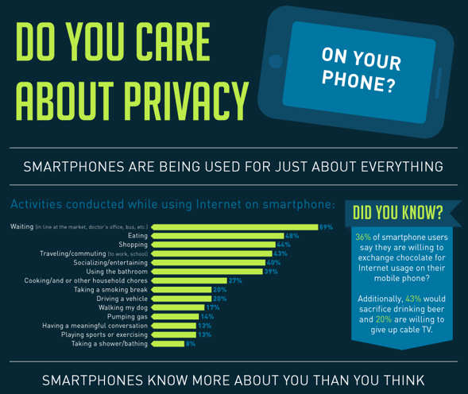

Privacy Resources-Web Browsing
Internet browsing is a key component of the internet. Browsing web pages allows us gather more information about what we want to learn. However, Internet browsing also has several flaws. These flaws can be very problematic for people further down the road. Here are some ways to stay safe when browsing the web-
- One of the more prominent features on websites that you might notice as you scroll through is advertisements. Many websites use these to make more money. However, these advertisements aren't always what they seem. Sometimes these advertisements have code that allows them to track who and what type of computer interacted with them. Some of these ads might even have malware that slipped past the ad service's filter. Thus, despite their benefit ot the sites, these ads can be a problem. The best solution is to install an adblocker. Personally, I prefer U-Block Origin (make sure it is U-Block Origin, not just U-Block, as that is something entirely different!) This addon allows for easy blocking of ads, Has extra tracking blockers and allows for easy whitelisting if you want to show ads on a certain page to support it.
- Similar to tracking in ads, some sites employ straight up tracking software. One of the most common tracking software is Google Analytics, which allows sites to gather numerous amounts of information on visitors using one premade script. This is obviously another privacy issue. To avoid this, I recommend either using the privacy filters under U-Block Origin, or downloading another great extension, known as Disconnect.me. This allows for you to see what sites are pulling information off the page you are looking at, and allows for easy privacy filtering from Google Analytics, Facebook buttons, and more. Also, most tracking software allows for you to opt out on their site, it is just hard to find. Here is the opt out page for Google Analytics tracking (Click on the dropdown menu for Privacy Controls)
- Finally, someone might try to steal your web traffic or information outside of the website that is hosting it. Public wifi's can be major targets for hackers that want to gather passwords, and it is remarkably easy to do. The best way to avoid this is to use a VPN and HTTPSEverywhere. HTTPSEverywhere forces any site that offers an encrypted web page (denoted by the https://, also usually the browser has a padlock icon to indicate the certificate to verify the site.) The VPN encrypts traffic between you and a middle server, then it sends it to the site. So, no one can read your network traffic then even if the site doesn't normally use encryption. A good VPN for this on mobile is the Opera VPN, which offers ad blocking, tracker blocking, and VPN all for free. Some of the sites I linked in the Further Reading section also have more resources for securing your web browsing.
